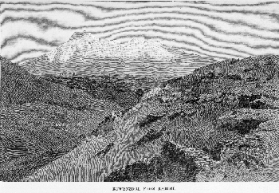

<html>
<head>
<title>The Annotated "Mountains of the Moon"</title>
</head>
<body>
<i>"Hey, Tom Banjo, it's time to matter..."</i>

<h2>The <i>Annotated</i> "Mountains of the Moon"</h2></a>
An installment in <a href="gdhome.html"> The <i>Annotated</i> Grateful Dead Lyrics.</a><br>
By <a href="david.html">David Dodd</a><br>
1997-98 Research Associate, Music Dept., University of California Santa Cruz<hr>
<a href="copyrigh.html">Copyright notice</a>
<hr>
<a href="#title"><h3>Mountains of the Moon</h3></a>
Words by Robert Hunter; music by Jerry Garcia<br>
Copyright Ice Nine Publishing; used by permission.
<p>
<blockquote>
<a href="#cold">Cold Mountain</a> water<br>
the <a href="#jade">jade merchant's daughter</a><br>
<a href="#mountains">Mountains of the Moon</a>, <a href="#electra>Electra</a><br>
<a href="#bow">Bow and bend to me</a> <br>
<a href="#crow">Hi ho the Carrion Crow <br>
Folderolderiddle</a><br>
Hi Ho the Carrion Crow<br>
Bow and bend to me<br>

<p>
Hey <a href="#tom">Tom Banjo</a><br>
Hey a <a href="#laurel">laurel</a><br>
More than laurel<br>
You may sow<br>
More than laurel<br>
You may sow<br>
<p>
Hey the laurel<br>
Hey the city<br>
In the rain<br>
Hey, hey,<br>
Hey the white wheat<br>
Waving in the wind<br>
<p>
20 degrees of solitude <br>
20 degrees in all<br>
All the dancing kings & wives<br>
assembled in the hall<br>
Lost is a long & lonely time<br>
<a href="#sybil">Fairy Sybil flying</a><br>
All along the all along<br>
the Mountains of the Moon <br>
<p>
<i>Here is feast of solitude<br>
A fiddler grim and tall<br>
Plays to dancing kings and wives<br>
Assembled in the hall<br>
Of lost, long, lonely times<br>
Fairy Sibil flying<br>
All along the all along<br>
the Mountains of the Moon</i><br>
<p>
Hey Tom Banjo<br>
It's time to matter<br>
The Earth will see you<br>
on through this time<br>
The Earth will see you on<br>
through this time<br>
<p>
Down by the water<br>
The <a href="#alfred">Marsh King</a>'s <a href="#daughter">Daughter</a><br>
Did you know?<br>
Clothed in tatters<br>
Always will be<br>
Tom, where did you go?<br>
<p>
Mountains of the Moon, Electra<br>
Mountains of the Moon<br>
All along the<br>
All along the<br>
Mountains of the Moon<br>
<p>
Hi Ho the Carrion Crow<br>
Folderolderiddle<br>
Hi Ho the Carrion Crow<br>
Bow and bend to me<br>
Bend to me<br>
</blockquote>
<p>
<blockquote>"(note: the lyric in italics is a re-write of the preceeding lyric which was dashed off in the studio under pressure & which I never thought did proper service to the song. Jerry approved of the change & I put in on the teleprompter hoping he'd sing it one day, but the band never got around to playing it again.)"--Robert Hunter</blockquote>
<hr>
<a name="title"><h3>Mountains of the Moon</h3></a>
Recorded on <cite><a href="discog1.html#aoxomoxoa">AOXOMOXOA</a></cite>.
<p>
<a href="biblio.html#scott">DeadBase</a> gives only ten performance dates for this song in the band's live repertoire, between February and July of 1969. Set lists for this period are far from complete, however, so it is likely there were more performances.
<p>
<a href="http://www.slingerland.com/fog/relix/records/tomcon.html" target="new">Tom Constanten</a> covers the song on his album <cite>Morning Dew</cite>; and the <a href="http://www.slingerland.com/fog/relix/records/deadring.html" target="new">Dead Ringers</a> cover it on their album <cite>Dead Ringers</cite>.
<p>
<a href="http://www.dead.net/cavenweb/furthur/otheronesbio.html" target="new">The Other Ones</a> performed the song on the <a href="http://www.dead.net/cavenweb/furthur/1998information.html" target="new">1998 Furthur Festival Tour</a>.
<p>
The <a href="telnet://well.sf.ca.us">WELL's</a> Deadlit Conference topic #42 is about "Mountains of the Moon."
<hr>
<a name="cold"><h3>Cold Mountain</h3></a>
<a href="http://www.charm.net/~brooklyn/People/GarySnyder.html" target="new">Gary

Snyder</a>, in <cite>The Evergreen Review</cite>, no. 6, 1958, published his translations of a seventh-century

Chinese poet, Han-Shan. According to Snyder,

<blockquote>

"Kanzan, or Han-shan, "Cold Mountain" takes his name from where

he

lived. He is a mountain madman in an old Chinese line of ragged

hermits. When he talks about Cold Mountain he means himself, his

home, his state of mind. He lived in the T'ang dynasty--

traditionally A.D. 627-650."(<ahref="biblio.html#snyder"> <cite>

<b>Riprap and Cold Mountain Poems</b></cite> </a>, p. 35)

</blockquote>

Snyder's translations reveal a mind speaking to us from the dim

past with words that ring remarkably fresh today. Here's one that

seems particularly pertinent:

<blockquote>

"Spring-water in the green creek is clear<br>

Moonlight on Cold Mountain is white<br>

Silent knowledge--the spirit is enlightened of itself<br>

Contemplate the void: this world exceeds stillness."<br>

--Number 11, page 49.

</blockquote>
<hr>
<a name="jade"><h3>Jade Merchant's daughter</h3></a>

Compare the title of <a href="biblio.html#sharp">Sharp</a> #64: "The Silk Merchant's Daughter," one of those ballads, like "Jack-A-Roe," (aka Jack the Sailor) in which a woman disguises herself as a man in order to go find

her

true love.
<hr>
<a name="mountains"><h3>Mountains of the Moon</h3></a>


(Illustration, entitled "Ruwenzori, from Karimi", from Henry

Stanley's <cite>In Darkest Africa</cite>,

1890.)<p>

The popular name, deriving from Ptolemy (second century A.D.),

who

thought them the source of the Nile River, for an actual region

of

Central Africa, the Ruwenzori Mountains, bordering Uganda and

Zaire. Several accounts of journeys to the "Mountains of the

Moon"

were published as books:

<ul>

<li>Moore, John Edward S. <cite>To the Mountains of the Moon,

being

an account of the modern aspect of Central Africa, and of some

little known regions traversed by the Tanganyika Expedition, in

1899 and 1900.</cite> London: Hurst and Blackett, 1901.

<li>Synge, Patrick Millington. <cite>Mountains of the Moon: an

expedition to the equatorial mountains of Africa.</cite> London:

L.

Dumoond, 1938.

<li><cite>A Voyage to the Mountains of the Moon Under the

Equator,

or, Parnassus Reform'd: Being the Apotheosis of Sir Smauel

Garth.</cite> London: Bettesworth and Pemberton, 1720. (This is

an

imaginary account.)

</ul>

Additionally, it is interesting to note that one of the

expeditions

to the Mountains of the Moon was undertaken by none other than

<a href="http://lycaeum.org/graphics/people/burton.html" target="new">Sir Richard Francis Burton</a> (1821-1890), in 1858, in search of the

source of the Nile. (Cold Mountain water?) Burton also translated

the <a href="http://excalibur.usc.edu/people/lyan/arabian_nights" target="new"><cite>Arabian

Nights</cite></a>, which are indirectly mentioned

in

<a href="baby.html">What's Become of the Baby</a>.

<p>

<a href="http://www.yahoo.com/Arts/Humanities/Literature/Genres/Literary_Fiction/Authors/Poe__Edgar_Allan__1809_1849_/" target="new">Edgar Allan

Poe</a> also mentions the "mountains of the moon,"

 in his poem, "Eldorado" (1849):
<blockquote>
"Gaily bedight,<br>
A gallant knight,<br>
In sunshine and in shadow,<br>

Had journeyed long,<br>

Singing a song,<br>

In search of Eldorado.<br>

<p>

But he grew old--<br>

This knight so bold--<br>

And o'er his heart a shadow<br>

Fell as he found<br>

No spot of ground<br>

That looked like Eldorado.<br>

<p>

And, as his strength<br>

Failed him at length,<br>

He met a pilgrim shadow--<br>

"Shadow," said he,<br>

"Where can it be--<br>

This land of Eldorado?"<br>

<p>

"Over the <b>Mountains<br>

Of the Moon</b>,<br>

Down the <a href="ripple.html#psalm">Valley of the

Shadow</a>,<br>

Ride, boldly ride."<br>

The shade replied,--<br>

"If you seek for Eldorado."

</blockquote>

<p>

Also compare Hunter's "Lay of the Ring" from the <b>Eagle Mall Suite</b>:

<blockquote>

"From the gates of Numinor<br>

to the walls of Valentine<br>

It's seven cold dimensions<br>

past the Mountains of the Moon"

</blockquote>
<hr>

<a name="electra"><h3>Electra</h3></a>
It's unclear whether Hunter is naming the jade merchant's

daughter,

or simply invoking the spirit of Electra. The name could refer to

either (1) the daughter, in Greek mythology, of Agamemnon and

Clytemnestra, who kills her mother with the aid of her brother,

Orestes, to avenge the murder of her father; or

<blockquote>

"(2) One of the Pleiades, daughter of Atlas, mother of Dardanus.

She is known as `the lost Pleiad,' for it is said that she

disappeared a little before the Trojan war, that she might be

saved

the mortification of seeing the ruin of her beloved city. She

showed herself occasionally to mortals, but always in the guise

of

a comet."--<a href="biblio.html#benet"><cite><b> Benet's Reader's

Encyclopedia</cite></b></a>

</blockquote>

<hr>
<a name="crow"><h3>Heigh-ho the carrion crow

folderolderiddle</h3></a>
This line is directly from an old <a href="goose.html">nursery

rhyme</a>/ballad:

<blockquote>

"As early as 1796 it ["The Carrion Crow"] was published as a

ballad

with the refrain: `With a heigh ho! the carrion crow!/Sing tol de

rol, de riddle row!" (<a href="biblio.html#goose"> <cite>The

Annotated Mother Goose</cite></a>, p. 127)

</blockquote>

<a href="biblio.html#sharp">Sharp</a> lists the ballad as #222,

"The

Carrion Crow." It's a nonsense tune, with lines like: Carrion

crow

sitting on an oak, with a ling dong dilly dol kiro me..."

<p>

The crow appears in one other Hunter lyric, "Uncle John's Band,"

although the "bird of paradise" mentioned in "Blues for Allah" is

also known as a "paradise crow."

<p>

The carrion crow (<i>corvus corone corone</i>) is found in

western

Europe and eastern Asia.
<p>
This note from a reader:
<blockquote>
Subject: Mountains of the Moon<br>
Date: Fri, 26 Jan 2001 17:37:09 -0800<br>
From: Mike Tisdale <tisdalem@calweb.com><br>
<p>
Dear David,
<p>
Michael Hearn's "Annotated Wizard of Oz" points out in one of
its
numerous footnotes that the Scarecrow's exclamation
"Tol-de-ri-de-oh"
after he is rescued from being stuck in the middle of the
river echoes
the carrion crow's tol de rol, de riddle row.  Whether this
could be
included in your site without copyright concerns, I will leave
to
somebody with brains instead of straw!
<p>
Mike Tisdale
</blockquote>

<hr>

<a name="bow"><h3>Bow and bend to me</h3></a>

This line, in a number of variations, is used as a refrain in the

ballad "The Two Sisters" (<a href="biblio.html#child"> Child</a>

#10, <a href="biblio.html#sharp">Sharp</a> #5). <a

href="biblio.html#bronson">Bronson</a> writes:

<blockquote>

"This ballad is still in active traditional life, especially in

those regions of the USA where the `play-party' dancing custom

has

persisted. In many variants the words of the refrain affirm the

association..."(p. 34)

</blockquote>

Some of the variants found in Bronson and Sharp:<br>

<ul>

<li>Bow it's been to me

<li>The bough has bent to me

<li>Bow and balance to me

<li>The bough has been to me

<li>The boughs they bent to me

<li>The boughs were given to me

<li>The boys are bound for me

<li>The vows she made to me

<li>And thou hast bent to me

</ul>

<p>

Of these variants, one is of particular note: "Bow and balance to

me," because it is a dance step, and the Hunter lyric seems to be

speaking of "kings and wives" assembling for a dance. <p>

The balance is described as follows in the <a

href="biblio.html#tolman"><cite>Country Dance Book</cite></a>:

<blockquote>

"Balance Partners: Partners face each other, then each step to the

side with right foot, point toe of left foot in front, step back to

place with left and point toe of right foot in front of left foot."(p. 34)

</blockquote>

You may see this step executed at the start of almost every dance

at any contra dance in the U.S. today, and it is a very courtly

step, lending the dance an air of chivalry.

<hr>
<a name="tom"><h3>Tom Banjo</h3></a>
Lenny Bailes, in the <a href="http://www.well.com" target="new">WELL's</a>
Deadlit conference (Topic #42, response #11, August 18, 1990), points out the possible reference to <a href="http://www.yahoo.com/Arts/Humanities/Literature/Genres/Science_Fiction__Fantasy__and_Horror/Authors/Tolkien__J_R_R_/" target="new">J.R.R. Tolkien's</a> character Tom Bombadil.
<p>
A wonderful and imaginative website, pointed out by Alex Allan, chronicles the life of a character named <a href="http://www.banjotime.com/who1.htm" target="new">Tom Banjo</a>.
<p>
Alex also sends this comment:
<blockquote>
Subject: Re: Friend Of The Devil<br>
Date: Thu, 11 Nov 1999 09:18:33 +1100<br>
From: "Alex Allan" <alex@whitegum.com>
<p>
David
<p>

One point I sent you soon after you got back is a possibility for "Tom
Banjo." If Uncle John is John Cohen, mightn't Tom Banjo be a reference to
Tom Paley, who played banjo with the New Lost City Ramblers? Like Uncle
John's Band, Mountains Of The Moon contains references to folk songs that
the NLCR played or would have known about.
<p>
Alex
</blockquote>
<p>
And now, there is a most intriguing possibility:
<blockquote>
Subject: Email from web page (Tom Banjo<br>
Date: Wed, 11 Oct 2000 14:48:14 -0400<br>
From: Scott Odell <jso@Radix.Net><br>
<p>
Dear David Dodd,
<p>
During a recent visit from my old friend and musician/poet, Burt Porter,
we were reminiscencing about another old friend, Tom "Tom Banjo"
Azarian, who is now living and sometimes performing around Burlington
Vermont.  We have for a long time assumed that the Tom Banjo of
"Mountains of the Moon" was a now-obscure reference to Tom Azarian, who
grew up in West Springfield Mass. and was one of the best known (and
properly so) banjo players in that part of New England during the late
50's, the 60's and 70's. He, Burt, and another friend, Denny Clifford
hung out and played a lot of traditional music around the campuses and
coffeehouses of that part of western Massachussets and nearby
Connecticut.  He's used the performing moniker "Tom Banjo" for as long
as I can remember.  I don't recall the specifics, but I remember Tom
talking about David Grisman and Robert Hunter circulating in the same
crowd during some of those years -- along with Judy Collins and Taj
Mahal, among others.
<p>
Tom's a great guy and fine banjo player and singer, but totally
unengaged in mainstream music-biz culture.  He has always affected a
somewhat casual oldtimey working class sort of fashion style which jibes
well with the image called up by that line in MOTM, ..."Clothed in
tatters	/ Always will be / Tom, where did you go?"
<p>
Answer -- Burlington Vermont!
<p>
Anyway, I thought of your excellent and most-interesting labor of love,
the annotated GD lyrics website, and thought you might be interested in
these musings . . .
<p>
Regards, Scott Odell
</blockquote>
<p>
Wow!
<p>
And now, what seems to be a pretty definitive answer on this one (but who knows?):
<blockquote>
<p>
From: Andrew Estroff [mailto:estroff@mail.com]<br>
Sent: Friday, October 18, 2002 1:13 PM<br>
To: ddodd@marin.org<br>
Subject: Mountains of the Moon and Tom Banjo
<p>

In case you hadn't already heard of the CD, or read any reviews, here is a link to the Time Argus (local central Vermont newspaper) review of Tom Azarian's recent CD.
<p>
http://timesargus.nybor.com/Archive/Articles/Article/46579
<p>
"Hanging out on college campuses, he became "Tom Banjo" and traded licks with other young pickers including budding mandolinist David Grisman (who would later record a song with Jerry Garcia featuring a character with Azarian's nickname). Soon, he found himself and his growing family living in an old Cabot, Vt., farmhouse, where his all-night music parties became legendary"
<p>
Peace,<br>
Andrew Estroff

</blockquote>
<p>
And on November 1, 2005, I received a letter from Tom Azarian, confirming himself as Tom Banjo. An excerpt:
<blockquote>
There are two slight corrections I should say...one is that I never lived in West Springfield but lived in Westfield.
<p>
And I didn't name myself "Tom Banjo"--the students a tthe University of Conn. did. Banjo players were scarce back then and they knew I appeared from time to time, with "tattered closthes," was always unemployed and played on the college radio and parties along with Dave Grisman and Judy Collins. They named me Tom Banjo only because no one knew my last name.
<p>
In the song Mtn. of the Moon it says "clothed in tattered always will be Tom, where did you go?" Well...I did sleep in my clothes but not always...and "where did I go?" I went to Vermont in 1963--married and started a farm with horses and cattle. Now I am divorced and livin in low income housing with assorted alcoholics and misfits.
<p>
I am still playing the same Vega banjo I bought in 1956. ...
<p>
Cheers and good luck for all your endeavors,<br>
Sincerely<br>
Tom Azarian
</blockquote>
<p>
Visit the <a href="http://www.tombanjo.net/">Tom Banjo website</a>!
<hr><a name="laurel"><h3>Laurel</h3></a>
A wreath of laurel is a symbol of victory in battle.
<p>

From Michael Abrams' <a href="http://www.flwildflowers.com/" target="new">Florida Wildflower Page</a>, a

<a href="http://www.flwildflowers.com/wildflowers/kalmia029.jpg" target="new">picture of a Mountain Laurel</a>. (<i>Kalmia latifolia</i>)
<hr>
<a name="sybil"><h3>Fairy Sybil flying</h3></a>
A misspelling? Hunter may mean "sibyl" rather than "sybil." <a href="biblio.html#benet">Benet</a> says:

<blockquote>

"<b>sibyl.</b> A prophetess of classical legend, who was supposed

to prophesy under the inspiration of a particular deity. The name

is now applied to any prophetess or woman fortuneteller."

</blockquote>

<hr>

<a name="alfred"><h3>Marsh King</h3></a>

Nickname for Alfred the Great (849-899), King of England, 871-

899. So named for his act of raising an army to defeat the

invading Danes from the stronghold of the impenetrable British

marshes, or fens (Fenario). He is the only British monarch to

have earned the designation "the Great." His name means,

literally, "Adviser to the elves." He had at least three

daughters, all of whom hold significant places in English

history:

<ul>

<li><b>Ethelflaed</b>. His eldest daughter, who married her

father's friend, Ethelred. After Ethelred died, she ruled Mercia,

a province of Britain, and is known to history as the "Lady of

the Mercians."

<li><b>Aelfthryth</b>. Married to Baldwin, count of Flanders.

<li><b>Ethelgifu</b>. Became a nun and then abbess of a convent

at Shaftesbury in Dorsetshire.

</ul>
<hr>
<h3><a name="daughter">Marsh King's Daughter</a></h3>
This note from Robert Hunter:
<blockquote>
"The Marsh King's Daughter" is a character in a <a href="http://www.math.technion.ac.il/~rl/Andersen/marsh_ki.html">fairy tale of the same name</a>

by <a href="http://www.yahoo.com/Arts/Humanities/Literature/Genres/Children_s/Fairy_Tales___Folktales/Andersen__Hans_Christian__1805_1875_/" target="new">Hans Christian Andersen</a>. I just wanted to say that.
</blockquote>
<p>
Thanks!
<hr>
keywords: @moon, @dance<br>
DeadBase code: [MOON]
<hr>
First posted: March, 1995.<br>
Last revised: April 24, 2006
<pre>


</pre>
</body>
</html>